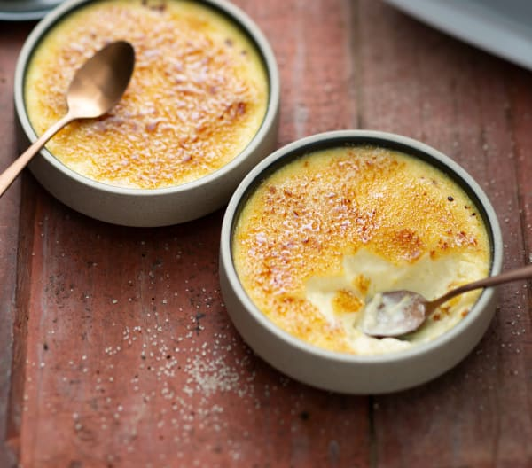

Description
Am I wrong to say we know what a creme brulee tastes like? Well, you are probably wrong and not in the "I'm a professional chef and excuse but excuse me",it's more like "I'm sorry you have had to taste that scramble-egg-so-called-creme-brulee".
If you ask why.Usually there is a perception of Creme brulee with a pudding-texture,that is completely false.It's a custard and by it's name it should have a texture similar to the one you can taste inside of a Donut althogh a bit more curd.It is time now for you too achieve that texture and make your friends,love ones or yourself that you are not just fat,but an elegant fat individual.
Ingredients
- 200 gr Heavy Cream
- 80 gr Whole Milk
- 60 gr Sugar
- 3 Egg Yolks
- 1 tspn Vanilla Extract
Steps
- We'll begin heating both liquids,in a small pot,without them boiling over.
- Next,while this is happening,we will mix everything else really fast with a whisk until a white-yellow mixture is achieved.
- We will add our hot pot of liquids into our bowl with eggs yolks,and mix for about 30 seconds.
- Let it cool down completly and remove with a spoon or a kitchen skimmer,the white foam that has appeared (I know it seems a lot,trust me,you don't want it)
- Now,it's time to put them in our ramekins and cook them in bain marie pot (it could be just a deep pan with water and your ramekins), for 35 minutes at 100 Celcius.
- After this time,you should see the ramekins with a jigglying curd now (YES is still liquid but has texture,it's all we want for now)
- Pop them in your cooler for one day and be amazed at the texture it has now.Sprinkle some white sugar on top,melted it with a torch until golden brown.And "Bon Appettit!"
Homepage